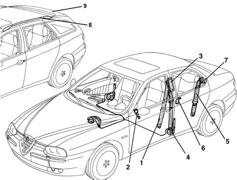
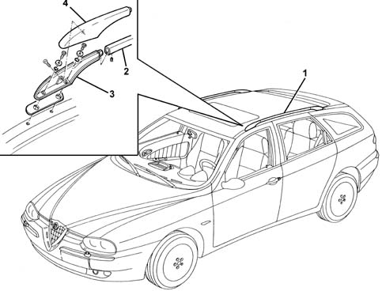
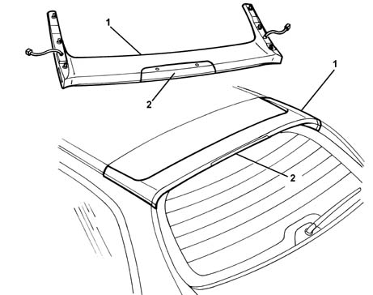

Introduction - SEAT BELTS AND ACCESSORIES
- Path
- Descriptions > 70 FITTINGS > 7065 SEAT BELTS AND ACCESSORIES > Introduction - SEAT BELTS AND ACCESSORIES
- Kind
- system description
- Applies to
- all engines; all production periods
- Interactive page
- https://sloeber94.github.io/elrnDB-a156/en/#/3239246
Applies to: all engines; all production periods
GLOSSARY
Pretensioners
These are safety devices fitted to the front seat belts which replace normal reels. In the case of a fairly severe frontal impact the device, activated by a small explosive charge, intervenes preventing the sliding of the belt and thereby securing the occupant to the seat, overcoming the inertia force which would tend to project them forwards.
Submarining
This is the phenomenon which can occur in the case of a frontal impact. Even with the seat belt fastened, the body of the occupant of the sea tends to slide under the belt.
VIEW OF ASSEMBLY
The figure illustrates the entire subassembly.

1, Front seat belt 2, Anchorage link 3, Height adjustment device 4, Pretensioner 5, Rear seat belt 6, Anchorage link 7, Reel 8, Longitudinal bars 9, Rear spoiler
FRONT SEAT BELTS
The front seat belts, fitted with pretensioners, have a double mounting on the seat.
In this way the belt follows the seat in the various positions it can assume, adapting to them to guarantee maximum safety in all situations.
In addition, the shape of the seat cushion and the profile of the seat belt greatly limit the phenomenon of the body sliding under the belt in the case of a frontal impact (submarining).
The belts are also height adjustable with a easily operated control.
The pretensioner management system is integrated with the Air Bag and is controlled by a single electronic control unit. For further information on the system 5580 SPECIAL ACCESSORIES .
Applies to: all engines; all production periods; only with equipment: Sedan
REAR SEAT BELTS
The rear seat belts are built into the seats, and the winder is not anchored to the floor, but secured under the parcel shelf. This solution makes it possible to avoid the upper idler and ensure a better grip of the belt to the body and less elongation in the case of an accident.
Applies to: all engines; all production periods; only with equipment: Station Wagon
For a description of the seat belts 7050 REAR SEATS .
LONGITUDINAL BARS
On request, the car can be fitted with longitudinal aluminium bars for attaching a roof rack, ski holder, etc.
The bars are painted light grey and are attached to the roof with bolts from the outside, covered with a top embellishment.
The profile of the bars does not alter the aerodynamics of the car and limits the occurrence of turbulence and wind whistle during driving at various speeds.

1 Longitudinal bars 2 Longitudinal element 3 Front mounting bracket 4 Top embellishment
REAR SPOILER
The car is fitted with an upper rear spoiler made of a particular heat-setting plastic (BMC-LPR 20) which ensures dimensional constancy and resistance to external agents. The profile of the spoiler is aimed at improving the aerodynamics of the car and limiting air turbulence at the various speeds.
The rear of the spoiler houses the LED type additional stop light (the individual LEDs cannot be replaced).
Inside the spoiler, there is the radio aerial. The aerial cannot be replaced by itself; the whole spoiler has to be replaced (6 nuts from inside the car).
